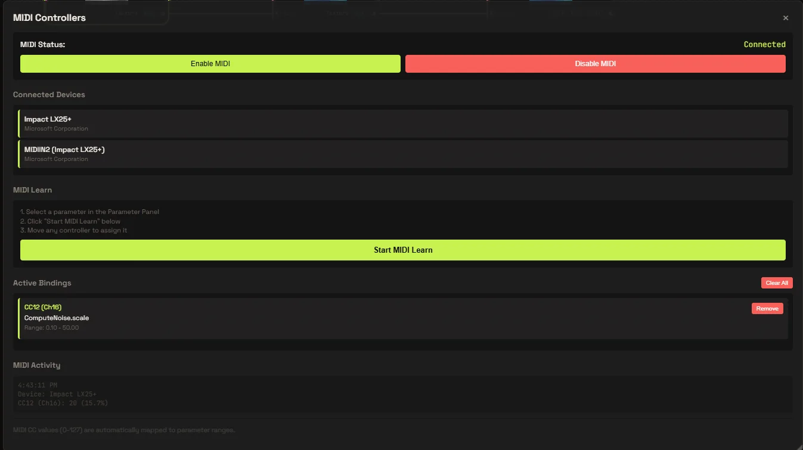
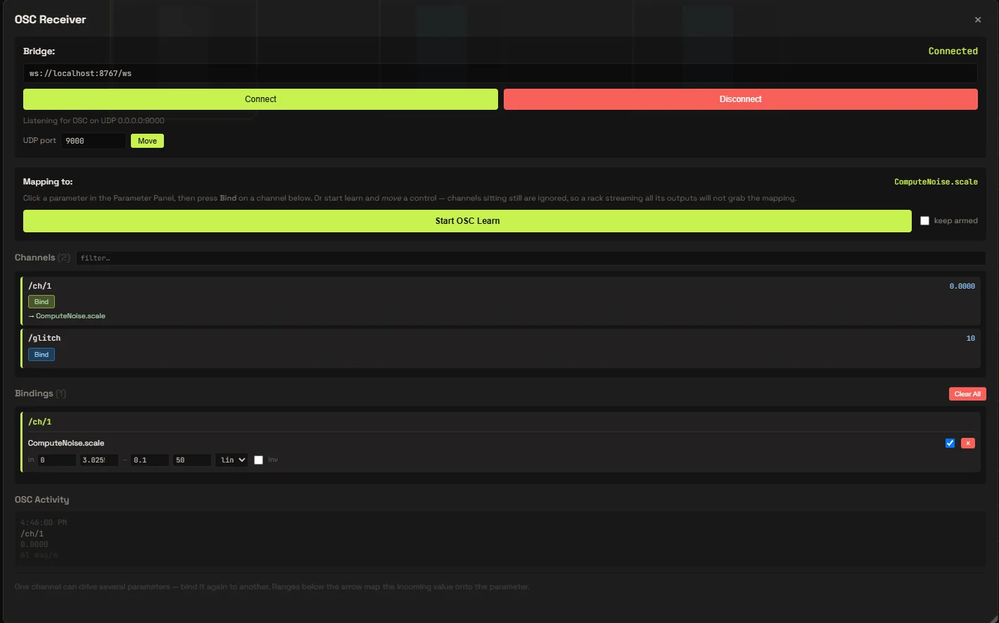
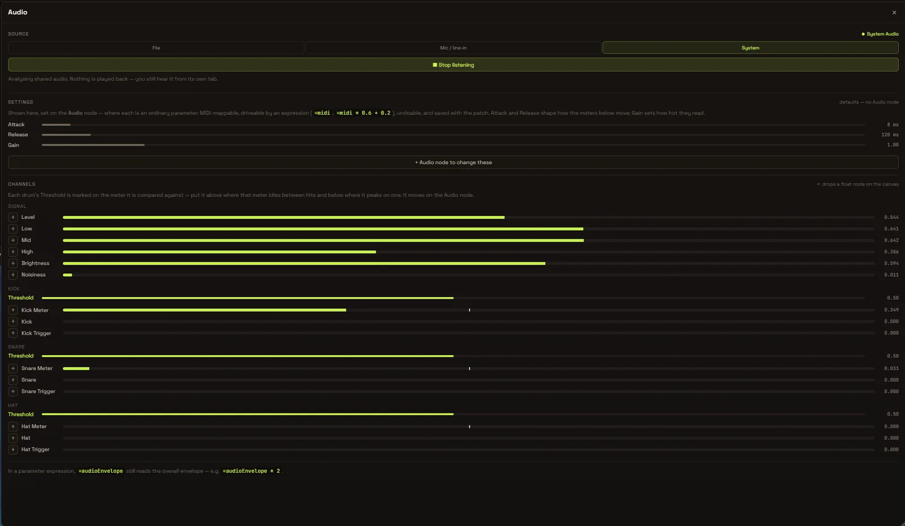
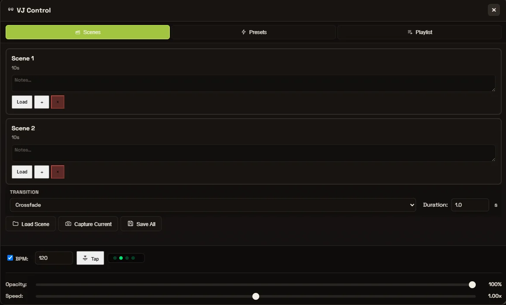

MIDI
Hardware control
Plug in any MIDI controller and learn a mapping in one click. Knobs, faders and pads bind straight to node parameters.
WebGPU node environment
Real-time generative visuals, composed as living node fields — synthesis, structure, and growth in one canvas.
A rhizome has no center and no fixed order. It grows from the middle, in every direction at once.
Rhizomium is a modular GPU node environment built for real-time generative visuals and evolving fields — a place where synthesis, structure, and growth coexist.
Compute and render on the GPU. Thousands of nodes evaluated per frame, no dropped frames.
Patch signals into structure. Every node is a living, editable field you can rewire mid-flow.
Feedback, noise, and growth that evolve continuously as you perform — never the same frame twice.
field_reel_2026 · 00:46
A single continuous take of fields growing, feeding back and reacting in real time. Everything you see is composed from nodes and driven live — no pre-rendered frames.
Patch any signal to any parameter. Rhizomium listens to your hardware, your software and the room itself.
Map a knob to feedback gain, a fader to growth rate, or the low end of a track to node density. Controls are first-class inputs — bind them once and perform without touching a mouse.

MIDI
Plug in any MIDI controller and learn a mapping in one click. Knobs, faders and pads bind straight to node parameters.

OSC
Send and receive OSC over the network. Drive fields from TouchOSC, Max, a phone or another machine on stage.

Audio Analyzer
FFT, beat and level analysis from any audio input. Route bands to any parameter so the visuals move with the music.

VJ Controller
Cue scenes, crossfade fields and trigger presets from a dedicated VJ layout built for the stage, not the studio.
Free
€0/ forever
The whole editor, and the AI that reads a patch without rewriting it.
Download for Windows// signed out works too, on a smaller allowance
popular
Cloude
€12/ month
The AI that writes: whole patches, custom nodes, and refactors of what you have.
Start Cloudeeverything in Free, plus
Studio
€39/ month
For work that leaves the laptop: installations, venues, shows.
Get Studioeverything in Cloude, plus
/ add-ons — bought separately, work on any plan
// allowances are daily and per feature, sized on what a call costs to run — full comparison and checkout
/ join
One account across Rhizomium and the gallery: it carries your tier into the studio, and gives what you publish a page and a space of its own.